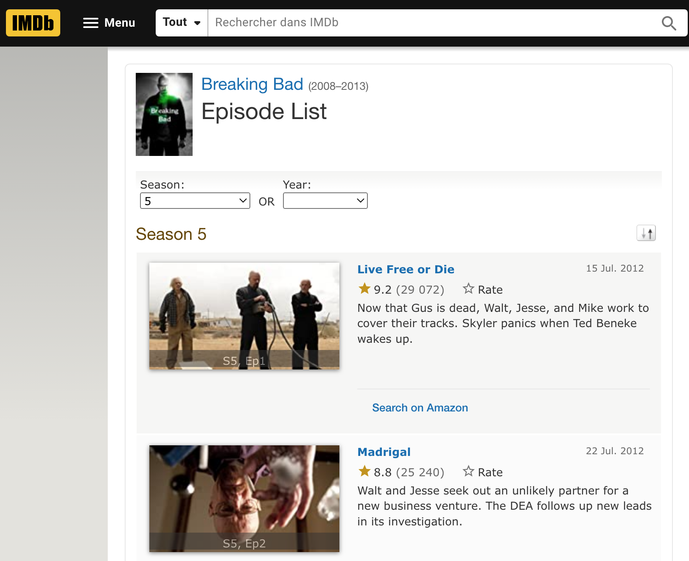
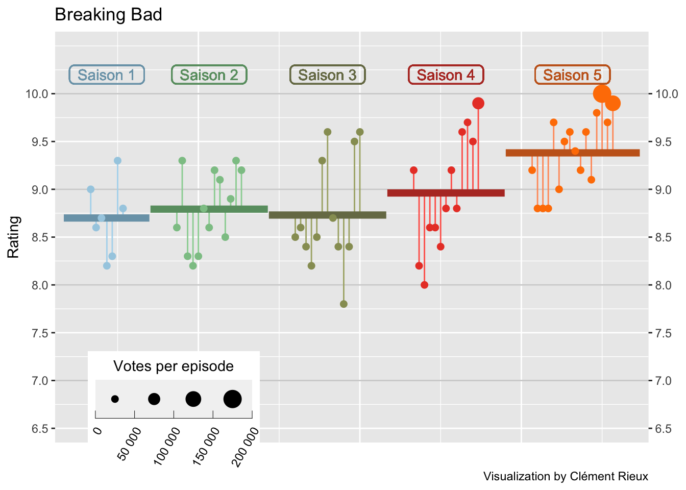
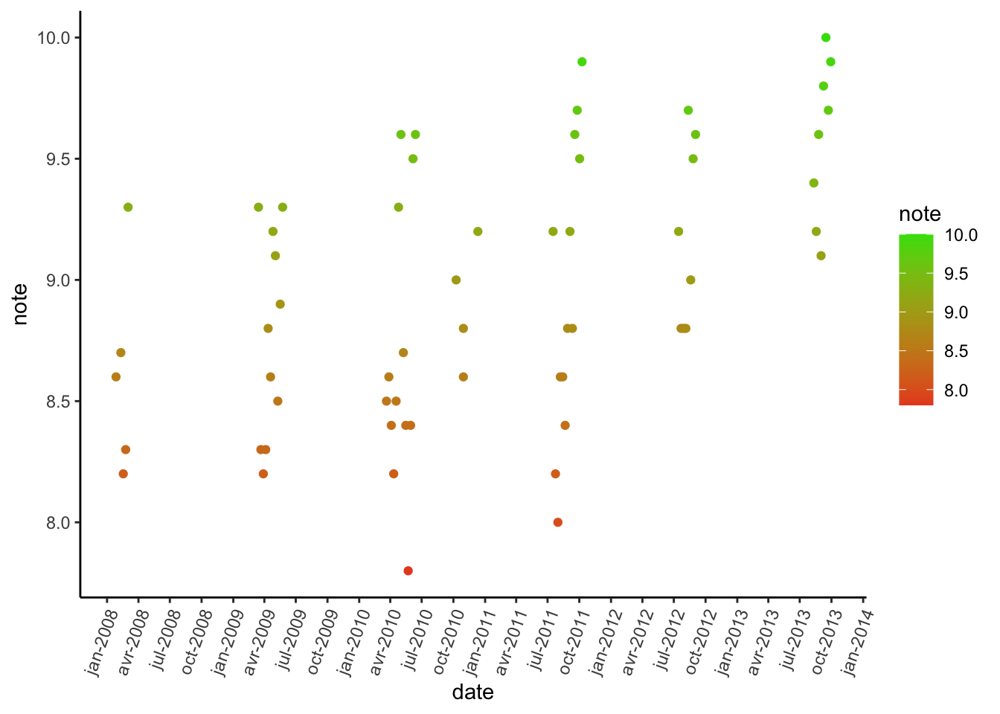

library(rvest) # manipulate HTML
library(stringr) # text manipulation
library(lubridate) # date manipulation
library(dplyr) # df manipulation
library(tidyr) # column manipulation
library(RColorBrewer) # color
library(ggplot2) # visualizationIntroduction
Hello !
Web scraping has revolutionized the way we collect data from the internet, providing us with valuable insights that were once difficult to obtain.
In recent years, web scraping has become increasingly popular in the entertainment industry, particularly when it comes to gathering data on TV show ratings and reviews.
By using web scraping tools, it is now possible to collect large amounts of data on a wide range of TV shows and analyze the data to identify patterns and trends. In this article, we will explore how web scraping can be used to collect TV show data, and how we can use this data to gain insights into the popularity and success of different shows.
We will also discuss how we can visualize the data using various tools and techniques to help us better understand the information we have gathered. Whether you are a TV enthusiast, a data analyst, or simply someone interested in learning more about the power of web scraping, this article will provide you with valuable insights and practical advice.

Where can I find the data ?
Actually, it’s pretty easy to find rating of tv shows. imdb provides us all the data we need.
For example, if I’m looking data for Breaking Bad :

I can get multiples informations :
Episode Name
Rating
Number of votes
Date
Sypnosis
If I’m looking at the url : https://www.imdb.com/title/tt0903747/episodes?season=1, we have :
tt0903747: Alias for the serieepisodes?season=1: Season number
How can i get the data ?
Load library
Init the variables
# Tv show title
serie_title = 'Breaking Bad'
# Seasons
s = 5
# Tv show code
code = 'tt0903747'
# setup dataframe
table = data.frame()Loop to get informations for each season
For each season (webpage), we will get informations for each episode.
Get the url
Download the .html page (we can also do it without downloading the page, but I prefer to retrieve the page locally
Extract element, for this i use the extension SelectorGadget
Append in the dataframe
for(i in 1:s){
url = paste0("https://www.imdb.com/title/",code,"/episodes?season=",i)
while(TRUE){
dl_file <- try(download.file(as.character(url), destfile = "temp.html", quiet=TRUE),
silent=TRUE)
if(!is(dl_file, 'try-error')) break
}
html_page <- read_html("temp.html")
saison = i
episode <- html_page %>%
html_nodes("#episodes_content strong a") %>%
html_text() %>%
str_replace_all("\t|\n|", "")
note <- html_page %>%
html_nodes(".ipl-rating-star.small .ipl-rating-star__rating") %>%
html_text() %>%
str_replace_all("\t|\n|", "")
vote <- html_page %>%
html_nodes(".ipl-rating-star__total-votes") %>%
html_text() %>%
str_replace_all("\t|\n|", "")
date <- html_page %>%
html_nodes(".airdate") %>%
html_text() %>%
str_replace_all("\t|\n|", "") %>%
dmy() %>%
as.character()
temp_table <- as.data.frame(cbind(saison, episode, note, vote, date))
table <- rbind(table,temp_table)
file.remove('temp.html')
}Perfect ! Now we have a well table
| saison | episode | note | vote | date |
|---|---|---|---|---|
| 1 | Pilot | 9.0 | (38,406) | 2010-10-09 |
| 1 | Cat’s in the Bag… | 8.6 | (28,006) | 2008-01-27 |
| 1 | …And the Bag’s in the River | 8.7 | (27,114) | 2008-02-10 |
| 1 | Cancer Man | 8.2 | (26,141) | 2008-02-17 |
| 1 | Gray Matter | 8.3 | (25,675) | 2008-02-24 |
| 1 | Crazy Handful of Nothin’ | 9.3 | (30,175) | 2008-03-02 |
What can I do with the data ?
I use the code from z3tt for his TidyTuesday plot from The Office, which I find very cool.
Firstly, we need to compute some informations that will be used to make a graph :
Episode number
Note by season
Rating mean
df_avg <-
table %>%
group_by(saison) %>%
mutate(episode = row_number(),
saison = as.numeric(saison),
note = as.numeric(note),
vote = gsub(',','',vote),
vote = as.numeric(gsub("[^\\d]+", "", vote, perl=TRUE))
) %>%
ungroup() %>%
arrange(saison, episode) %>%
mutate(episode_id = row_number()) %>%
group_by(saison) %>%
mutate(
avg = mean(note),
episode_mod = episode_id + (9 * saison),
mid = mean(episode_mod)
) %>%
ungroup() %>%
mutate(saison = factor(saison))Secondly, for each season summarize the rating :
df_lines <-
df_avg %>%
group_by(saison) %>%
summarize(
start_x = min(episode_mod) -5,
end_x = max(episode_mod) + 5,
y = unique(avg)
) %>%
pivot_longer(
cols = c(start_x, end_x),
names_to = "type",
values_to = "x"
) %>%
mutate(
x_group = if_else(type == "start_x", x + .1, x - .1),
x_group = if_else(type == "start_x" & x == min(x), x_group - .1, x_group),
x_group = if_else(type == "end_x" & x == max(x), x_group + .1, x_group)
)Then plot :
nb.cols <- s
mycolors <- colorRampPalette(brewer.pal(8, "Paired"))(nb.cols)
df_avg %>%
ggplot(aes(episode_mod, note)) +
geom_hline(
data = tibble(y = 7:11),
aes(yintercept = y),
color = "grey82",
size = .5
) +
geom_segment(aes(
xend = episode_mod,
yend = avg,
color = saison,
color = after_scale(colorspace::lighten(color, .2))
)) +
geom_line(data = df_lines,
aes(
x_group,
y,
color = saison,
color = after_scale(colorspace::darken(color, .2))
),
size = 2.5) +
geom_point(aes(size = vote,
color = saison)) +
geom_label(
aes(
mid,
10.2,
label = glue::glue(" Saison {saison} "),
color = saison,
color = after_scale(colorspace::darken(color, .2))
),
show.legend = FALSE,
fill = NA,
label.padding = unit(.2, "lines"),
label.r = unit(.25, "lines"),
label.size = .5
) +
scale_x_continuous(expand = c(.015, .015)) +
scale_y_continuous(
expand = c(.03, .03),
limits = c(6.5, 10.5),
breaks = seq(6.5, 10, by = .5),
sec.axis = dup_axis(name = NULL)
) +
scale_color_manual(values = mycolors, guide = "none") +
scale_size_binned(
name = "Votes per episode",
range = c(.3, 6),
labels = function(x)
format(x, big.mark = " ", scientific = FALSE)
) +
ggtitle(serie_title) +
labs(x = "", y = "Rating",
caption = "Visualization by Clément Rieux") +
guides(
size = guide_bins(
show.limits = T,
direction = "horizontal",
title.position = "top",
title.hjust = .5
)
) +
theme(
legend.position = c(.2, .085),
legend.key.size = unit(1, 'cm'),
legend.key.width = unit(2, "lines"),
legend.text = element_text(
angle = 60,
vjust = 1,
hjust = 1
),
axis.ticks.x = element_blank(),
axis.text.x = element_blank()
)
We can also look at the evolution over time :
df_avg %>%
mutate(date = as.Date(date)) %>%
ggplot(aes(x = date, y = note, color = note)) +
geom_point() +
scale_colour_gradient(low = "#E84D23", high = "#3CDE0B", na.value = NA) +
scale_x_date(date_breaks = "3 month", date_labels = "%b-%Y") +
theme_classic() +
theme(axis.text.x = element_text(angle = 70, hjust = 1)) 
Now you are able to retrieve data from imdb and do analysis yourself !
If you want to see all the code and examples (Stranger Things, Peaky Bliders, The Simpsons…), you can find it on my github.